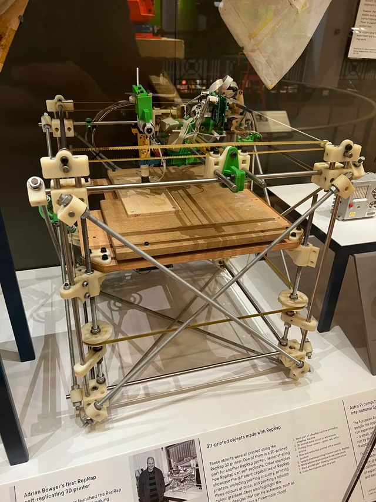
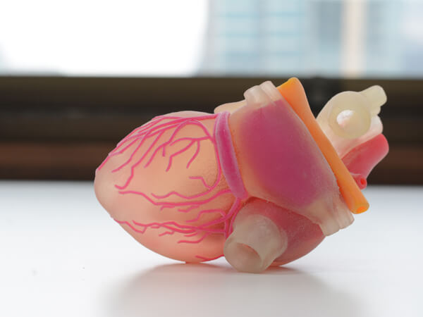

What is 3D printing?
3D プリンティングまたは積層造形は、次元オブジェクトの構築です CAD モデルまたはデジタル 3D モデルから。様々な工程で実現可能です コンピュータ制御下で材料が堆積、結合、または固化される。 一緒に追加される材料 (溶融されるプラスチック、液体、または粉末粒子など)、 通常は層ごとに行われます。
History of 3D printing
The earliest 3D printer originated in 1981, when Dr. Hideo Kodama invented one of the first rapid prototyping machines that created parts layer by layer, using a resin that could be polymerized by UV light. In 1986, the first patent for stereolithography (SLA) was filed by Chuck Hull, who is considered “the inventor of 3D printing” for creating and commercializing both SLA and the .stl format - the most common file type used for 3D printing.
In 1988, Carl Deckard, a student at the University of Texas, licensed selective laser sintering (SLS) technology - another type of 3D printing that uses a laser to sinter powdered material into solid structures. Shortly after, in 1989, Scott Crump patented fused deposition modeling (FDM) - also known as fused filament fabrication (FFF) - and founded Stratasys, one of the main players in the 3D printing industry to this day. That same year, Hull's company, 3D Systems Corporation, released the SLA-1 3D printer.
My experience
The first time I was introduced to 3D printing was when I was in 6th grade. Since then, 3D printing has become one of my favorite hobbies. I think that everyone should learn how to use a 3D printer as it is so versatile and helpful in so many ways. The first thing I ever printed was a Pokemon model I downloaded from the internet. 3D printing also got me to learn about 3D design and CAD early on, which allowed me to design so many cool things. One time, I helped design and print a handle for a giant air cannon for my club in high school.
Not only is 3D printing a fun hobby, but it has also helped me in my career. Currently, I'm a part of a 3D printing club, which teaches people about 3D printing. Also, last summer, I learned how to extract a 3D model from an MRI scan, which can be used to print a life-size model so that a surgeon can better understand their patient's organ before surgery.